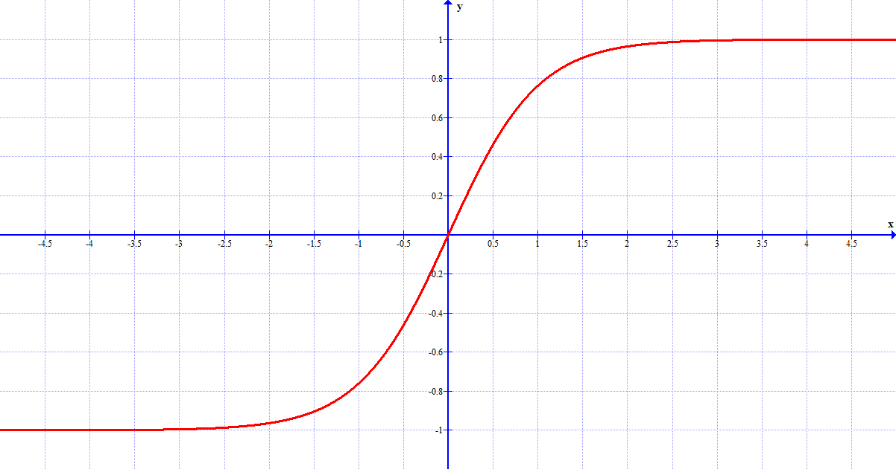
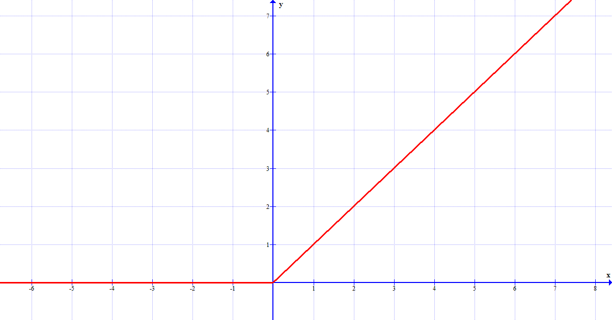
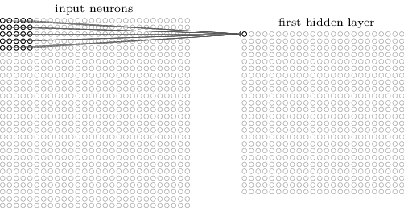
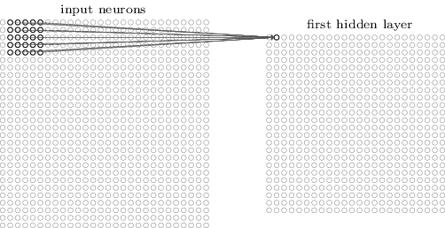
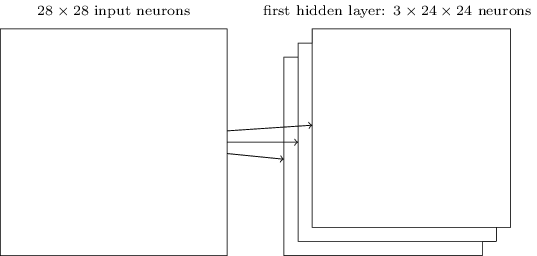
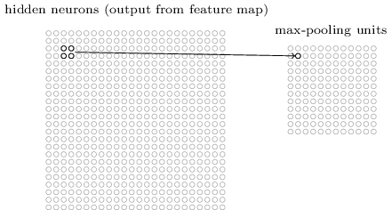
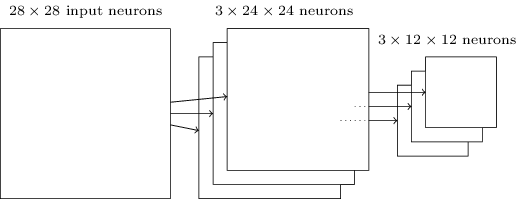
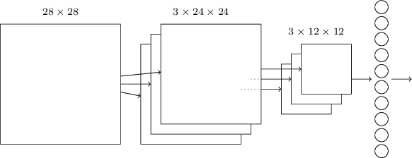

Frontiere
In questo capitolo parleremo di tecniche alternative a quelle che abbiamo visto
che si sono messe a punto durante lo studio delle reti neurali. Vedremo in particolare altri algoritmi
per l'apprendimento della rete, altri modelli di neuroni e infine altre architetture di reti neurali.
Variazioni all'algoritmo del gradiente decrescente
- La tecnica hessiana prevede, in termini formali, di tenere conto anche del termine di secondo
grado nell'approssimazione di Taylor della funzione costo. In parole povere, riprendendo la metafora
della pallina da golf, è come se, durante il nostro tiro, non tenessimo conto solo della direzione e
della velocità della pallina, ma anche della sua accelerazione: consideriamo sia come cambia la
posizione della pallina, sia come cambia la sua velocità. Questa ci dà la possibilità di ottenere
calcoli più accurati, migliorando le performance della rete. Tuttavia, il problema è che viene
coinvolta nei calcoli una matrice (detta hessiana, da cui il nome di questo metodo) le cui
dimensioni sono molto grandi, rendendo di fatto questa tecnica di difficile applicazione pratica.
- I vantaggi di questa tecnica sono tuttavia troppo grandi per poterla ignorare. Quindi, si è pensato
un algoritmo detto del gradiente decrescente basato sul momento che cerca di prendere i vantaggi
della tecnica hessiana, evitando matrici di dimensioni esagerate. In questo contesto non consideriamo
più la posizione come valore da studiare, bensì la velocità, ed introduciamo una nozione di
attrito che tende a ridurre gradualmente la velocità. Il procedimento è uguale a quello
dell'algoritmo del gradiente decrescente, solo che stavolta lavoriamo sulla velocità (il tasso di
apprendimento, ad esempio, influenza non più la distanza che percorre la pallina da golf, ma la sua
velocità). Si aggiunge inoltre il coefficiente del momento, che smorza la velocità. Lavorare
con la velocità permette più facilmente di evitare che sbagliamo la buca e rende i nostri tiri più
precisi: la nostra rete avrà performance migliori, a patto di aggiungere dei calcoli al nostro
algoritmo.
Variazioni all'algoritmo del gradiente decrescente
I modelli di neuroni si distinguono l'uno dall'altro per la diversa funzione che
usano per calcolare l'output.
- I neuroni tanh sostituiscono la funzione sigma dei neuroni sigmoidi con la funzione di
tangente iperbolica.

Il grafico della tangente iperbolica.
- I neuroni lineari sono associati ad una funzione molto semplice (la retta), ma possono
sostituire tranquillamente i neuroni sigmoidi.

Il grafico della funzione associata a questi neuroni.
Altre architetture di reti neurali
Finora abbiamo visto reti neurali completamente connesse, ovvero in cui il
neurone di un layer riceve un input da ciascun neurone del layer precedente e invia
il proprio output a tutti i neuroni dello strato successivo. Si può pensare, però, ad una rete che
cerchi di sfruttare il vantaggio della struttura dei dati di input.
Le reti neurali convoluzionali hanno un'architettura speciale che le rende
particolarmente adatte a lavorare con le immagini. Questa sua architettura fa sì che queste reti
siano veloci da allenare e aiuta lo sviluppo di reti complesse, con molti layer nascosti.
Le idee alla base delle reti convoluzionali sono tre.
- Quando lavoravamo con un'immagine, connettevamo ogni pixel di input ad ogni neurone nascosto del
primo layer. Ora, invece, ognuno di questi neuroni copre solo una piccola regione dell'immagine
di partenza: tale regione prende il nome di campo ricettivo locale. Ogni connessione tra un
neurone e un campo impara un peso, mentre il layer nascosto un bias complessivo.

L'operazione è quella di riassumere un'intera regione dell'immagine in un
solo neurone.

L'operazione viene ripetuta fino a quando non abbiamo coperto tutta l'immagine.
- La seconda idea prevede di usare gli stessi pesi e lo stesso bias per ogni neurone nel primo
hidden layer. Questo vuol dire che tutti i neuroni di questo strato ricercano la stessa
caratteristica (ovvero uno schema dei pixel di input): le reti convoluzionali infatti sono insensibili
alle traslazioni delle immagini.
Il primo strato ricerca quindi una caratteristica ben definita e costruisce la mappa
dell'immagine, basandosi su ciò che deve cercare. Ovviamente, per usare una rete neurale per
riconoscere un'immagine, non ci basta una sola mappa, ma ne serviranno diverse: si costruisce il
primo hidden layer diviso in diversi gruppi, ognuno dei quali costruisce una mappa diversa.
La nostra rete ora sfrutta la struttura spaziale dell'immagine!

L'architettura della rete finora.
- Lo strato successivo viene detto pooling layer e costruisce una mappa ancora più
condensata dell'immagine iniziale. Ogni neurone nel pooling layer non fa altro che riassumere
una regione di neuroni dello strato precedente. In pratica, questi neuroni dicono, con il loro
output, se una certa caratteristica è stata trovata nella regione di immagine che stanno studiando.

Il pooling layer svolge un'operazione identica a quella del primo strato
sull'immagine.

L'architettura della rete finora.
Infine, solitamente, si usa come ultimo strato una struttura completamente connessa
che lega ogni neurone a tutti quelli del pooling layer. Otteniamo quindi un'architettura di
questo tipo:

L'architettura più semplice di rete convoluzionale comprende quindi 4 layer: input,
convoluzionale, pooling e output.